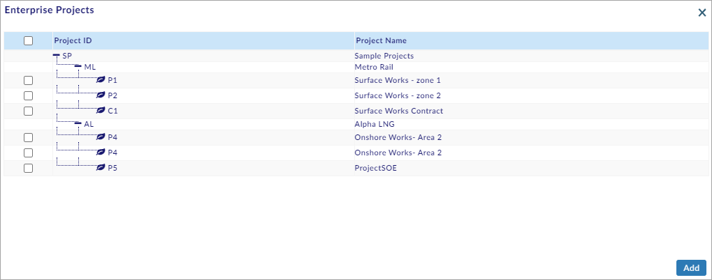
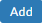

Cost & Schedule Variance
You can perform the following in the Cost & Schedule Variance Section:
- Generate and View the Cost & Schedule Variance Report
- View the Cost Code Wise Cost Variance and Schedule Variance Sub Report
- View the Project Wise Cost Variance and Schedule Variance Sub Report
- View the EPS (Enterprise Project Structure) Wise Cost and Schedule Variance Sub Report
- View the Periodical Cost and Schedule Variance Sub Report
Generate and View Cost & Schedule Variance Report:
This section helps you to Generate and View the Cost & Schedule Variance Report.
To Generate and View the Cost & Schedule Variance Report, do the following.
- Select EPS Name or Project Name, and the Enterprise Projects window opens as shown in the figure.

- Select the required project(s) and click .
- Select Cost Code and the Project Cost Code window opens as shown in the figure.
- Select the required cost code/cost codes and click
 .
. - Select From Date and To Date.
- Click
 and the report opens as shown in the figure.
and the report opens as shown in the figure.
- On the column headers, click
 and the drop-down menu opens as shown in the figure.
and the drop-down menu opens as shown in the figure.
- You can perform the following on the drop-down menu.
- Sort Ascending: Select to sort the records in ascending order.
- Sort Descending: Select to sort the records in descending order.
- Hide Column: Select to hide the column.
Note:
- After sorting, Remove Sort option is shown on the drop-down menu. Select Remove Sort to remove the sorting.
- You can also click on the column header to toggle between Sort Ascending, Sort Descending, and Remove Sort.
- Click
 available on the right side of the screen and the drop-down menu opens as shown in the figure.
available on the right side of the screen and the drop-down menu opens as shown in the figure.
- You can perform the following on the drop-down menu.
- Export all data as csv: Select to export all the data as csv file and download it to your computer.
- Export all data as excel: Select to export all the data as an excel file and download it to your computer.
- Reset Columns: Select to reset the columns to the default view.
- Columns: Select the columns available on the menu to toggle between showing and hiding column(s) as shown in the figure (Use the scroll bar to view more columns).
Note:
 is shown in the drop-down menu if a column is shown.
is shown in the drop-down menu if a column is shown.- is shown in the drop-down menu if a column is hidden.
- Click Reset to reset the screen to the default view.
You have successfully Generated and Viewed the Cost & Schedule Variance Report.
View Cost Code Wise Cost Variance and Schedule Variance Sub Report:
This section helps you to View the Cost Code Wise Cost Variance and Schedule Variance Sub Report.
To View the Cost Code Wise Cost Variance and Schedule Variance Sub Report, do the following.
- Perform steps 1 - 6 of Generate and View Cost & Schedule Variance Report Section (See the Generate and View Cost & Schedule Variance Report Section above).
- Select Cost Code Wise Cost Variance and Schedule Variance Report from the Sub Reports drop-down menu and the Cost & Schedule Variance - Cost Code Wise Cost Variance and Schedule Variance Report page opens as shown in the figure.
Note:
- Select Chart to view the chart only.
- Select Table to view the table only.
- Select Chart & Table to view both the chart and table.
- Click the required colour code(s) to toggle between hiding and showing code(s) shown in the chart.
- Right-click on the chart for more chart options.
- Operations can be performed on the table, similar to those performed on steps 7 - 10 of Generate and View Cost & Schedule Variance Report Section (See the Generate and View Cost & Schedule Variance Report Section above).
You have successfully Viewed the Cost Code Wise Cost Variance and Schedule Variance Sub Report.
View Project Wise Cost Variance and Schedule Variance Sub Report:
This section helps you to View the Project Wise Cost Variance and Schedule Variance Sub Report.
To View the Project Wise Cost Variance and Schedule Variance Sub Report, do the following.
- Perform steps 1 - 6 of Generate and View Cost & Schedule Variance Report Section (See the Generate and View Cost & Schedule Variance Report Section above).
- Select Project Wise Cost Variance and Schedule Variance Report from the Sub Reports drop-down menu and the Cost & Schedule Variance - Project Wise Cost Variance and Schedule Variance Report page opens as shown in the figure.
Note:
- Select Chart to view the chart only.
- Select Table to view the table only.
- Select Chart & Table to view both the chart and table.
- Click the required colour code(s) to toggle between hiding and showing code(s) shown in the chart.
- Right-click on the chart for more chart options.
- Operations can be performed on the table, similar to those performed on steps 7 - 10 of Generate and View Cost & Schedule Variance Report Section (See the Generate and View Cost & Schedule Variance Report Section above).
You have successfully Viewed the Project Wise Cost Variance and Schedule Variance Sub Report.
View EPS Wise Cost and Schedule Variance Sub Report:
This section helps you to View the EPS Wise Cost and Schedule Variance Sub Report.
To View the EPS Wise Cost and Schedule Variance Sub Report, do the following.
- Perform steps 1 - 6 of Generate and View Cost & Schedule Variance Report Section (See the Generate and View Cost & Schedule Variance Report Section above).
- Select EPS Wise Cost and Schedule Variance Report from the Sub Reports drop-down menu and the Cost & Schedule Variance - EPS Wise Cost and Schedule Variance Report page opens as shown in the figure.
Note:
- Select Chart to view the chart only.
- Select Table to view the table only.
- Select Chart & Table to view both the chart and table.
- Click the required colour code(s) to toggle between hiding and showing code(s) shown in the chart.
- Right-click on the chart for more chart options.
- Operations can be performed on the table, similar to those performed on steps 7 - 10 of Generate and View Cost & Schedule Variance Report Section (See the Generate and View Cost & Schedule Variance Report Section above).
You have successfully Viewed the EPS Wise Cost and Schedule Variance Sub Report.
View Periodical Cost and Schedule Variance Sub Report:
This section helps you to View the Periodical Cost and Schedule Variance Sub Report.
To View the Periodical Cost and Schedule Variance Sub Report, do the following.
- Perform steps 1 - 6 of Generate and View Cost & Schedule Variance Report Section (See the Generate and View Cost & Schedule Variance Report Section above).
- Select Periodical Cost and Schedule Variance Report from the Sub Reports drop-down menu and the Cost & Schedule Variance - Periodical Cost and Schedule Variance Report page opens as shown in the figure (Daily Periodic Sub Report is shown by default).
- To view the Weekly Periodic Sub Report, select Weekly from the Periodic Sub Report drop-down menu and the Weekly Periodic Sub Report opens as shown in the figure.

- To view the Monthly Periodic Sub Report, select Monthly from the Periodic Sub Report drop-down menu and the Monthly Periodic Sub Report opens as shown in the figure.
- To view the Yearly Periodic Sub Report, select Yearly from the Periodic Sub Report drop-down menu and the Yearly Periodic Sub Report opens as shown in the figure.
Note:
- Select Chart to view the chart only.
- Select Table to view the table only.
- Select Chart & Table to view both the chart and table.
- Click the required colour code(s) to toggle between hiding and showing code(s) shown in the chart.
- Operations can be performed on the table, similar to those performed on steps 7 - 10 of Generate and View Cost & Schedule Variance Report Section (See the Generate and View Cost & Schedule Variance Report Section above).
You have successfully Viewed the Periodical Cost and Schedule Variance Sub Report.
Created with the Personal Edition of HelpNDoc: Easily create Web Help sites